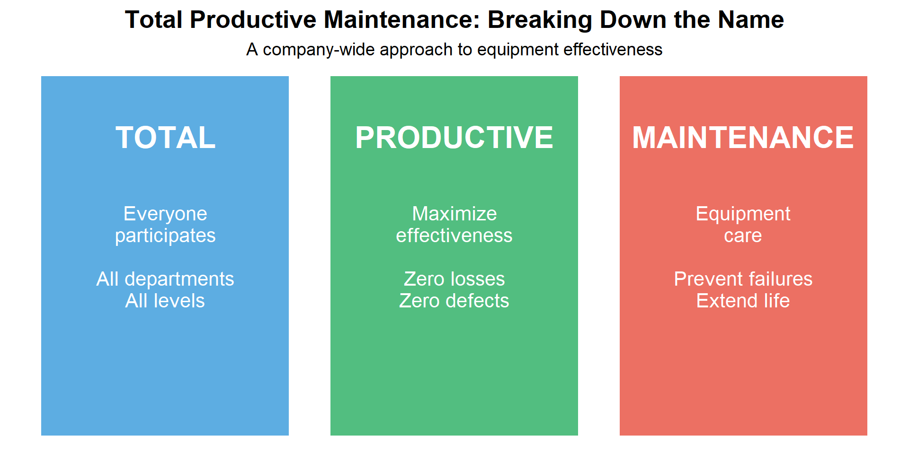
14 Total Productive Maintenance (TPM)
14.1 Learning Objectives
By the end of this chapter, you will be able to:
- Define Total Productive Maintenance and explain its objectives
- Describe the 8 pillars of TPM and their interconnections
- Calculate Overall Equipment Effectiveness (OEE) and its components
- Identify and categorize the Six Big Losses
- Implement autonomous maintenance activities
- Develop preventive and predictive maintenance strategies
- Apply TPM principles to improve equipment reliability and productivity
“Take care of your equipment, and it will take care of your production.” — Seiichi Nakajima, Father of TPM
14.2 Introduction to TPM
14.2.1 What is Total Productive Maintenance?
Total Productive Maintenance (TPM) is a holistic approach to equipment maintenance that strives to achieve perfect production with no breakdowns, no defects, and no accidents. It involves everyone in the organization, from operators to top management.
14.2.2 History of TPM
| Era | Maintenance Approach | Description | Key Change |
|---|---|---|---|
| Pre-1950s | Breakdown Maintenance | Fix it when it breaks; reactive only | No prevention |
| 1950s | Preventive Maintenance | Scheduled maintenance to prevent failures | Time-based prevention |
| 1960s | Productive Maintenance | Maintenance focused on reliability and maintainability | Design for maintenance |
| 1970s | TPM Developed | Nakajima develops TPM at Nippondenso (Toyota supplier) | Operator involvement |
| 1980s | TPM Spreads Globally | Adopted by automotive, electronics, process industries worldwide | World-class standard |
| 1990s-Present | TPM + Industry 4.0 | Integration with predictive analytics, IoT sensors, AI | Data-driven maintenance |
14.2.3 The Goals of TPM
TPM aims to achieve zero targets:
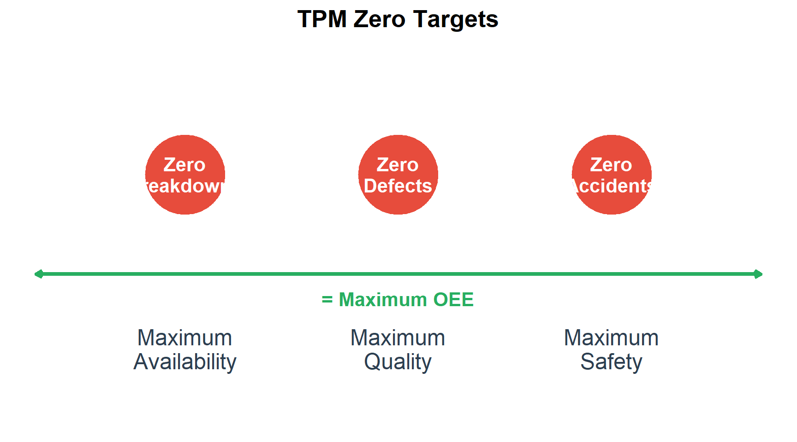
14.2.4 Traditional vs. TPM Approach
| Aspect | Traditional Maintenance | TPM Approach |
|---|---|---|
| **Equipment ownership** | 'Maintenance owns the machines' | 'We all own the machines' |
| **Maintenance responsibility** | Maintenance department only | Everyone (operators + maintenance) |
| **Operator role** | Operate; call maintenance when broken | Operate, clean, inspect, maintain |
| **Maintenance focus** | Fix breakdowns quickly | Prevent breakdowns; extend life |
| **Problem solving** | Reactive; fire-fighting | Proactive; root cause elimination |
| **Goal** | Minimize maintenance cost | Maximize equipment effectiveness |
Question: Why involve operators in maintenance?
Operators are the first line of defense because:
- They know the equipment: Operators work with machines every day and notice subtle changes
- Early detection: Small problems are detected before becoming major failures
- Ownership mindset: People take better care of things they “own”
- Reduced response time: Operators can address minor issues immediately
- Freed maintenance resources: Technicians can focus on complex tasks
Example: An operator notices a slight vibration change in a motor. Under traditional maintenance, they might ignore it. Under TPM, they report it, potentially preventing a $50,000 breakdown.
“No one knows a machine better than the person who operates it every day.”
14.3 The Eight Pillars of TPM
TPM is built on eight pillars, each addressing a specific aspect of equipment management and organizational culture.
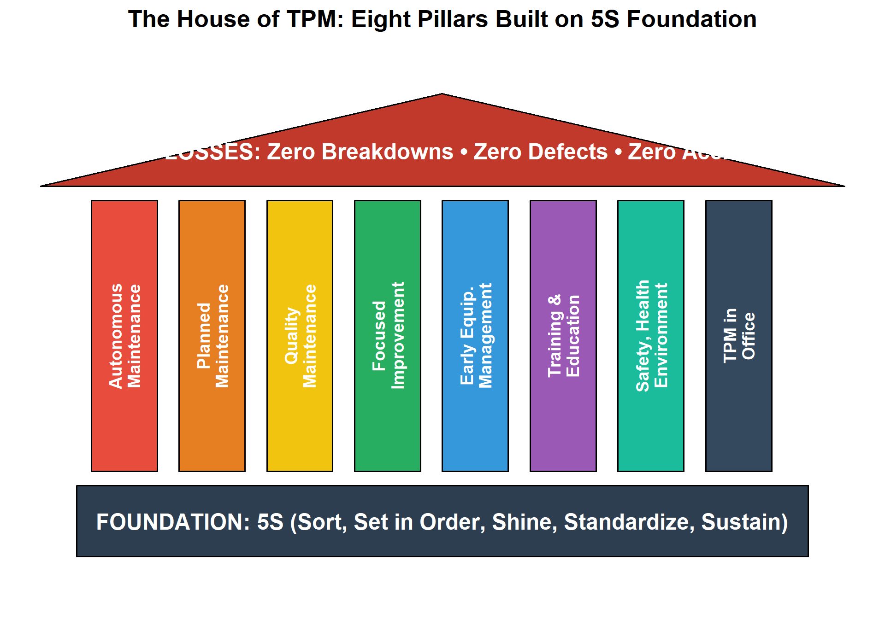
| # | Pillar | Purpose | Key Activities |
|---|---|---|---|
| 1 | **Autonomous Maintenance** | Operators maintain their own equipment | Cleaning, inspection, lubrication, minor repairs |
| 2 | **Planned Maintenance** | Scheduled maintenance by specialists | PM schedules, predictive maintenance, spare parts |
| 3 | **Quality Maintenance** | Zero defects through equipment conditions | Identify equipment conditions causing defects |
| 4 | **Focused Improvement** | Eliminate losses through kaizen activities | Loss analysis, root cause, countermeasures |
| 5 | **Early Equipment Management** | Design equipment for maintainability | Design reviews, vertical startup, LCC analysis |
| 6 | **Training & Education** | Develop skilled operators and technicians | Skills matrix, training programs, OJT |
| 7 | **Safety, Health, Environment** | Zero accidents, safe workplace | Hazard identification, safety audits, ergonomics |
| 8 | **TPM in Office** | Apply TPM principles to administrative processes | Streamline workflows, reduce waste in offices |
14.4 Overall Equipment Effectiveness (OEE)
14.4.1 What is OEE?
Overall Equipment Effectiveness (OEE) is the primary metric of TPM. It measures how effectively equipment is being used by combining three factors: Availability, Performance, and Quality.
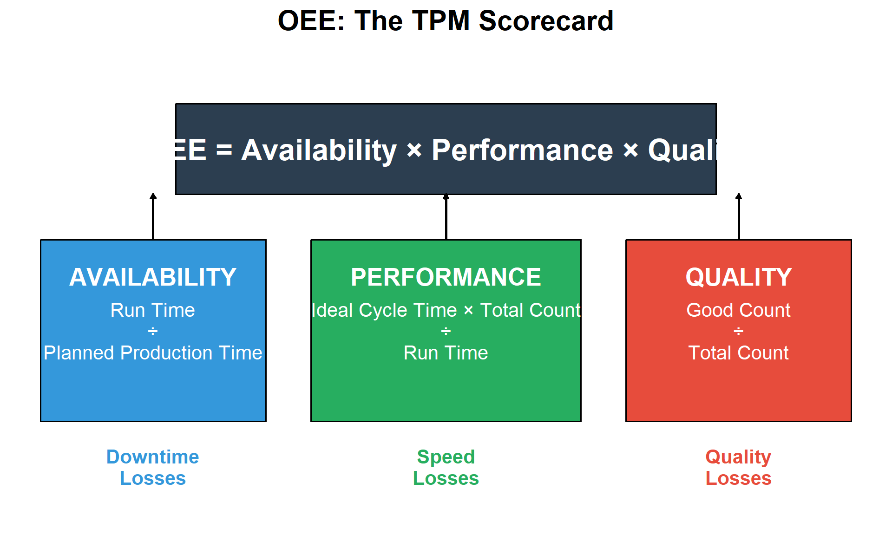
14.4.2 OEE Component Formulas
| Component | Formula | What It Measures | Losses Captured |
|---|---|---|---|
| **Availability** | $\frac{\text{Run Time}}{\text{Planned Production Time}} \times 100\%$ | Time the equipment is running vs. planned time | Breakdowns, changeovers, adjustments |
| **Performance** | $\frac{\text{Ideal Cycle Time} \times \text{Total Count}}{\text{Run Time}} \times 100\%$ | How fast equipment runs vs. design speed | Minor stops, reduced speed, idling |
| **Quality** | $\frac{\text{Good Count}}{\text{Total Count}} \times 100\%$ | Good parts vs. total parts produced | Defects, rework, startup rejects |
| **OEE** | $\text{Availability} \times \text{Performance} \times \text{Quality}$ | Overall effectiveness combining all three | All six big losses combined |
14.4.3 OEE Calculation Example
Live cell — try different downtime, production, or defect numbers.
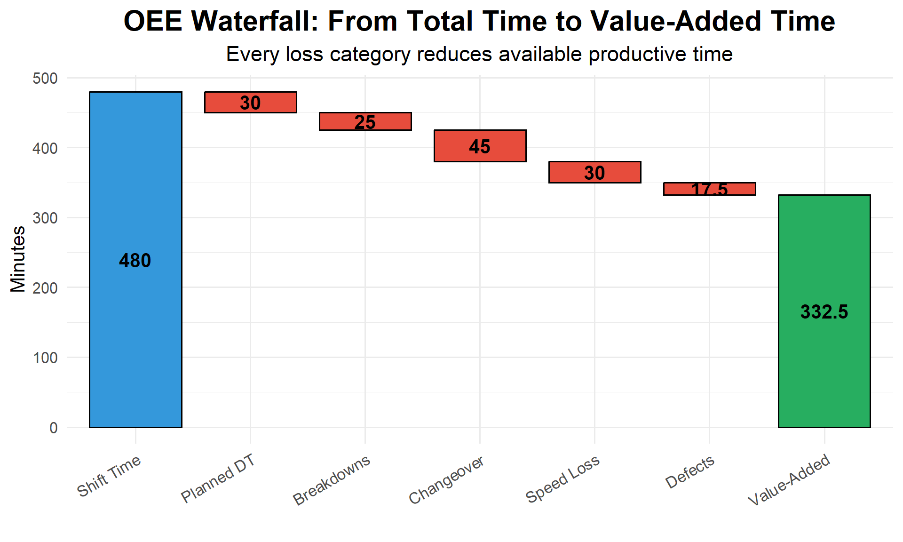
14.4.4 OEE Benchmarks
| OEE Level | Classification | Interpretation | Component Targets |
|---|---|---|---|
| < 65% | Unacceptable | Significant improvement opportunities exist | — |
| 65% - 75% | Typical | Average for discrete manufacturing | A: 90%, P: 85%, Q: 95% |
| 75% - 85% | Good | Well-managed operations | A: 92%, P: 90%, Q: 97% |
| > 85% | World Class | Best-in-class performance | A: 95%, P: 95%, Q: 99% |
Interactive Exercise: Calculate OEE
Given the following shift data, calculate OEE:
- Shift length: 480 minutes
- Planned breaks: 40 minutes
- Equipment breakdown: 30 minutes
- Setup/changeover: 20 minutes
- Ideal cycle time: 1 minute/part
- Total parts produced: 350
- Rejected parts: 14
Work through the calculation:
Solution:
Planned Production Time = 480 - 40 = 440 minutes
Run Time = 440 - 30 - 20 = 390 minutes
Availability = 390 / 440 = 88.6%
Theoretical Output = 390 / 1 = 390 parts
Performance = 350 / 390 = 89.7%
Quality = (350 - 14) / 350 = 336 / 350 = 96.0%
OEE = 88.6% × 89.7% × 96.0% = 76.3%Interpretation: This is “Good” performance, above the typical range. The biggest opportunity is in Performance (speed losses).
14.5 The Six Big Losses
TPM categorizes all equipment losses into six categories, which map directly to the OEE components.
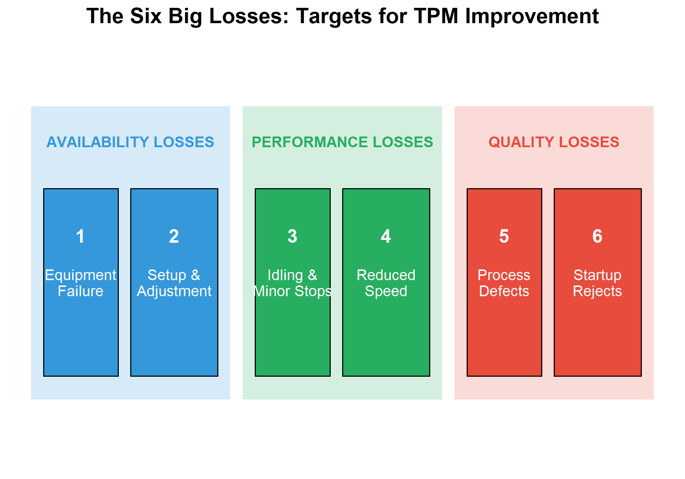
| # | Loss Category | OEE Component | Description | Examples |
|---|---|---|---|---|
| 1 | **Equipment Failure** | Availability | Unplanned equipment breakdown | Motor failure, sensor malfunction, mechanical breakdown |
| 2 | **Setup & Adjustment** | Availability | Time for changeover, tool changes, adjustments | Die change, product changeover, calibration |
| 3 | **Idling & Minor Stops** | Performance | Brief stoppages (jams, blockages, cleaning) | Sensor trips, material jams, overloads (<5 min) |
| 4 | **Reduced Speed** | Performance | Running slower than design speed | Worn tooling, operator caution, material variability |
| 5 | **Process Defects** | Quality | Defects produced during normal operation | Scrap, rework, out-of-spec product |
| 6 | **Startup Rejects** | Quality | Defects during warmup, startup, changeover | First-off rejects, warming up, stabilization |
14.5.1 Typical Loss Distribution
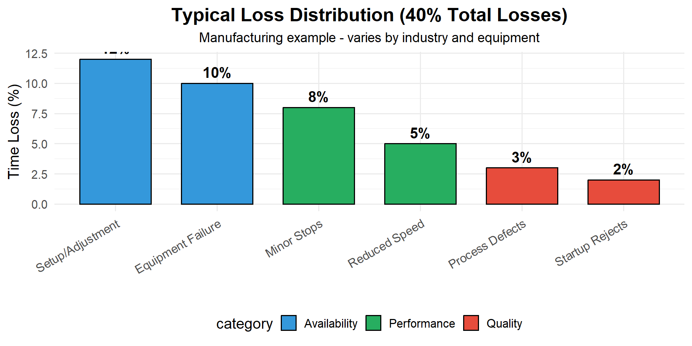
14.6 Autonomous Maintenance
Autonomous Maintenance (AM) is the first and most visible pillar of TPM. It transfers basic maintenance tasks from maintenance specialists to operators.
14.6.1 The Seven Steps of Autonomous Maintenance
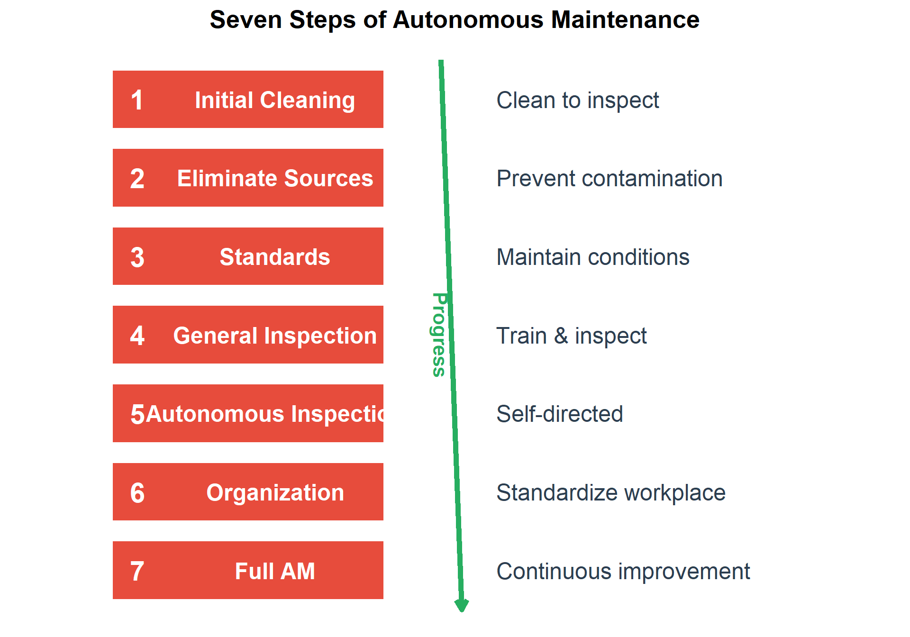
| Step | Name | Activities | Outcome |
|---|---|---|---|
| 1 | **Initial Cleaning** | Deep clean equipment; identify abnormalities | Equipment baseline; 100+ abnormalities found typical |
| 2 | **Eliminate Contamination Sources** | Find and fix sources of dirt, leaks, contamination | Reduced cleaning time; contamination controlled |
| 3 | **Cleaning & Lubrication Standards** | Create standards for cleaning, lubricating, inspection | Consistent equipment condition; clear expectations |
| 4 | **General Inspection** | Train operators on equipment function; expand skills | Skilled operators; detect abnormalities early |
| 5 | **Autonomous Inspection** | Operators perform scheduled inspections independently | Reliable self-directed maintenance program |
| 6 | **Organization & Tidiness** | Standardize workplace; visual management | Efficient, safe, visual workplace |
| 7 | **Full Autonomous Maintenance** | Continuous improvement; operators propose improvements | Empowered operators; sustained improvement |
14.6.2 The AM Tag System
During autonomous maintenance activities, operators identify abnormalities using tags:
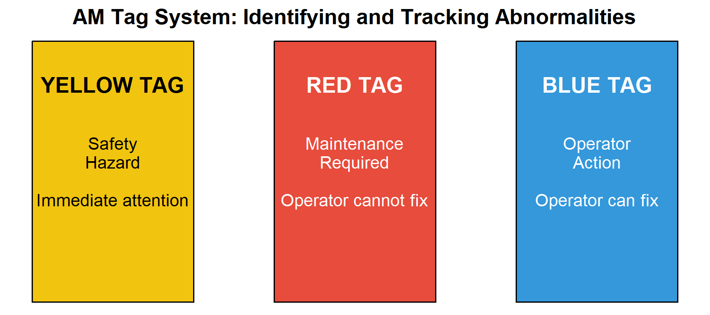
14.6.3 Example: AM Cleaning and Inspection Checklist
| # | Check Item | Method | Standard | Frequency |
|---|---|---|---|---|
| 1 | General cleanliness | Visual | No dust, debris, contamination | Daily |
| 2 | Oil/lubricant levels | Visual/gauge | Between min-max marks | Daily |
| 3 | Loose bolts/fasteners | Touch/wrench | Hand tight + 1/4 turn | Weekly |
| 4 | Unusual sounds | Listen | Normal operating sound | Each startup |
| 5 | Vibration | Touch | Minimal, no unusual patterns | Each startup |
| 6 | Temperature | Touch/thermometer | < 60°C (or per spec) | Hourly |
| 7 | Leaks (oil, air, coolant) | Visual | No visible leaks | Daily |
| 8 | Safety guards in place | Visual | All guards secure | Each shift |
14.7 Planned Maintenance
Planned Maintenance is the second pillar, focusing on scheduled maintenance activities performed by maintenance specialists.
14.7.1 Types of Maintenance
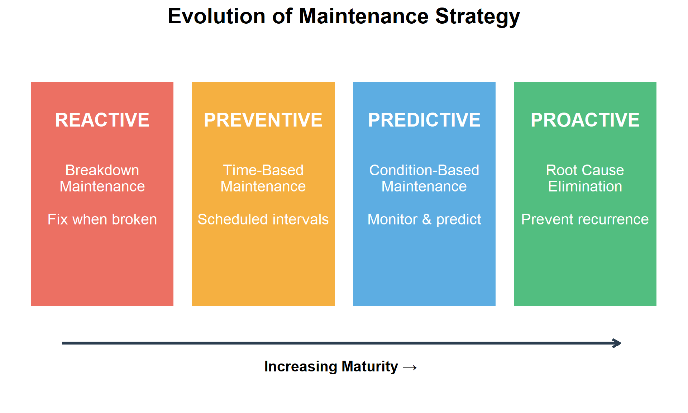
| Type | Approach | Advantages | Disadvantages | Best For |
|---|---|---|---|---|
| **Breakdown** | Run to failure | No upfront cost | Unplanned downtime, secondary damage | Non-critical, cheap to replace |
| **Preventive** | Time/cycle-based replacement | Planned downtime, parts availability | May replace good parts | Wear items with known life |
| **Predictive** | Condition monitoring | Optimal component life, targeted actions | Monitoring investment required | Critical equipment, expensive failures |
| **Proactive** | Root cause elimination | Prevents future failures | Requires analysis capability | Recurring problems |
14.7.2 Predictive Maintenance Technologies
| Technology | What It Detects | Equipment Applications | Typical Warning Time |
|---|---|---|---|
| **Vibration Analysis** | Imbalance, misalignment, bearing wear, looseness | Rotating equipment (motors, pumps, fans, gearboxes) | Weeks to months |
| **Thermography** | Hot spots, electrical issues, friction, insulation problems | Electrical panels, motors, bearings, refractory | Hours to days |
| **Oil Analysis** | Contamination, wear particles, lubricant degradation | Gearboxes, hydraulics, engines, compressors | Weeks to months |
| **Ultrasound** | Leaks, bearing defects, electrical discharge | Steam traps, valves, bearings, electrical equipment | Days to weeks |
| **Motor Current Analysis** | Motor winding issues, rotor bar problems, power quality | Electric motors, drives, generators | Days to weeks |
14.7.3 The P-F Curve
The P-F Curve illustrates the concept of detecting potential failure (P) before functional failure (F).
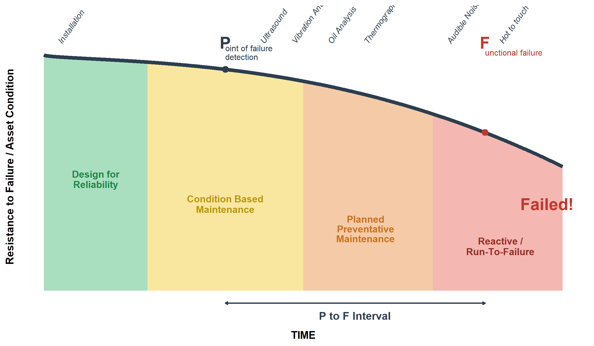
Question: Why is predictive maintenance better than preventive maintenance?
Preventive Maintenance (Time-Based): - Replaces parts at fixed intervals regardless of condition - May replace parts still in good condition (waste) - May miss failures that occur before scheduled replacement - Based on average life, not individual component condition
Predictive Maintenance (Condition-Based): - Monitors actual equipment condition - Replaces parts when condition indicates need - Maximizes component life - Provides warning time to plan repairs
Example: - Preventive: Replace bearing every 6 months (may last 9 months or fail at 4 months) - Predictive: Monitor vibration; replace when trending indicates 2-3 weeks to failure - Result: Optimal component life, planned downtime, no unexpected failures
Cost Comparison: - Reactive repair: $10,000 (including secondary damage, lost production) - Preventive replacement: $3,000 (may waste $1,000 in parts life) - Predictive replacement: $2,500 (optimal timing, minimal waste)
14.8 Focused Improvement (Kobetsu Kaizen)
Focused Improvement uses cross-functional teams to eliminate specific losses identified through OEE analysis.
14.8.1 The Kaizen Process
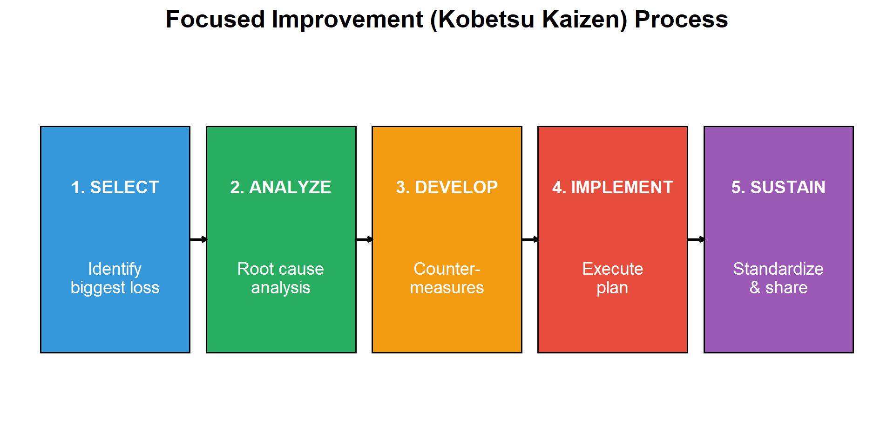
14.8.1.1 Understanding Kaizen
Kaizen (改善) is a Japanese term meaning “change for better” or continuous improvement. Unlike large-scale transformation projects, Kaizen focuses on small, incremental improvements made consistently over time. The philosophy is built on the belief that every process can be improved, and everyone—from operators to managers—should participate in identifying and implementing improvements.
Core Principles of Kaizen:
- Good processes bring good results — Focus on improving the process, not blaming people
- Go see for yourself (Gemba) — Understand the actual situation at the workplace
- Speak with data — Base decisions on facts and measurements
- Take action to contain and correct root causes — Don’t just treat symptoms
- Work as a team — Cross-functional collaboration produces better solutions
- Kaizen is everybody’s business — Every employee can contribute improvements
14.8.1.2 The Five Steps in Detail
Step 1: SELECT — Identify the Biggest Loss
The first step uses data to identify which loss has the greatest impact on OEE. This typically involves:
- Reviewing OEE data and breakdown logs
- Creating Pareto charts to visualize loss magnitude
- Selecting a loss that is significant, measurable, and within the team’s ability to address
- Forming a cross-functional team with members who understand the equipment and process
Key question: “Which single problem, if solved, would give us the biggest improvement?”
Step 2: ANALYZE — Root Cause Analysis
Once a loss is selected, the team investigates its root cause using structured problem-solving tools:
- Why-Why Analysis (5 Whys): Repeatedly asking “why” to drill down from symptoms to root causes
- Fishbone Diagram (Ishikawa): Categorizing potential causes by Machine, Method, Material, Man, Measurement, Environment
- PM Analysis: A systematic method for chronic losses that examines physical mechanisms
- Data collection: Gathering facts at the Gemba (actual workplace)
Key principle: Never assume you know the cause—verify with evidence.
Step 3: DEVELOP — Create Countermeasures
Based on root cause analysis, the team develops countermeasures—actions designed to eliminate or reduce the root cause:
- Brainstorm multiple potential solutions
- Evaluate options based on effectiveness, cost, and implementation time
- Create an action plan with clear responsibilities and deadlines
- Consider both immediate fixes and permanent solutions
- Apply error-proofing (Poka-Yoke) where possible
Important: Countermeasures address root causes, not just symptoms.
Step 4: IMPLEMENT — Execute the Plan
The team puts countermeasures into action:
- Follow the action plan systematically
- Make changes during planned downtime when possible
- Document all modifications made
- Train affected personnel on new procedures
- Monitor results immediately after implementation
- Be prepared to adjust if initial results are not as expected
Tip: Start with small-scale trials before full implementation when possible.
Step 5: SUSTAIN — Standardize and Share
The final step ensures improvements are maintained and shared across the organization:
- Standardize: Update procedures, checklists, and work instructions to reflect the new method
- Visualize: Create visual controls that make the standard easy to follow
- Train: Ensure all shifts and new employees learn the improved method
- Verify: Include checks in AM routines or audits to confirm the standard is being followed
- Share: Communicate successful improvements to other areas that might benefit (Yokoten—horizontal deployment)
Kaizen is never finished—today’s standard is tomorrow’s baseline for further improvement.
14.8.1.3 Kaizen Event vs. Daily Kaizen
| Aspect | Kaizen Event (Blitz) | Daily Kaizen |
|---|---|---|
| Duration | 3-5 days intensive | Ongoing, small improvements |
| Scope | Focused on one specific problem | Any improvement opportunity |
| Team | Dedicated cross-functional team | Individual or small group |
| Impact | Significant, measurable improvement | Cumulative effect over time |
| Example | Reduce changeover time by 50% | Reorganize tool storage for easier access |
Both approaches are valuable—Kaizen events tackle significant losses while daily Kaizen builds a culture of continuous improvement.
14.8.2 Loss Elimination Tools
Effective loss elimination requires systematic tools that help teams identify problems, find root causes, and implement lasting solutions. The following tools are essential for Focused Improvement activities.
14.8.2.1 Pareto Analysis
Pareto Analysis applies the 80/20 rule: roughly 80% of losses come from 20% of causes. By creating a Pareto chart, teams can visualize which losses have the greatest impact and prioritize their improvement efforts accordingly.
How to use:
- Collect data on all losses (downtime events, defects, speed reductions)
- Categorize losses by type or cause
- Calculate the frequency or duration of each category
- Rank categories from highest to lowest
- Create a bar chart with a cumulative percentage line
- Focus improvement efforts on the “vital few” categories that account for most losses
14.8.2.2 Why-Why Analysis (5 Whys)
Why-Why Analysis is a simple but powerful technique for drilling down from a symptom to its root cause by repeatedly asking “Why?” The goal is to go beyond surface-level explanations to find the fundamental cause that, if addressed, will prevent recurrence.
Example:
| Level | Question | Answer |
|---|---|---|
| Problem | Machine stopped | Overload tripped |
| Why 1? | Why did the overload trip? | Motor drew excessive current |
| Why 2? | Why excessive current? | Bearing was seized |
| Why 3? | Why was bearing seized? | Insufficient lubrication |
| Why 4? | Why insufficient lubrication? | Lubrication schedule not followed |
| Why 5? | Why not followed? | No visual indicator when lubrication is due |
| Root Cause | Missing visual management for lubrication schedule |
Tips for effective Why-Why Analysis:
- Stay focused on one causal chain at a time
- Base answers on facts, not assumptions—verify at the Gemba
- Don’t stop at “human error”—ask why the error was possible
- The number 5 is a guideline, not a rule—continue until you reach a controllable root cause
14.8.2.3 PM Analysis
PM Analysis (Physical Mechanism Analysis or Phenomenon-Mechanism Analysis) is a systematic method for analyzing chronic losses—problems that occur repeatedly despite multiple repair attempts. It examines the physical principles behind equipment failures.
The PM Analysis Process:
- Clarify the phenomenon: Describe exactly what happens, when, and under what conditions
- Conduct physical analysis: Understand the physical principles involved (friction, heat, vibration, etc.)
- Identify conditions that produce the phenomenon: List all conditions required for the problem to occur
- Investigate equipment, materials, and methods: Examine each condition against the 4Ms (Machine, Material, Method, Man)
- Plan and implement countermeasures: Address the conditions that allow the problem to occur
- Verify results: Confirm the chronic loss has been eliminated
PM Analysis is particularly valuable when Why-Why Analysis doesn’t resolve a recurring problem.
14.8.2.4 SMED (Single-Minute Exchange of Die)
SMED is a systematic approach to reducing changeover or setup time—the time between the last good part of one product and the first good part of the next. The goal is to complete changeovers in under 10 minutes (single-digit minutes).
The SMED Process:
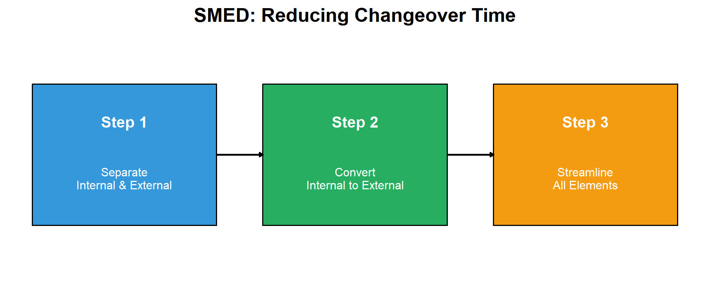
Key Concepts:
- Internal setup: Tasks that can only be done when the machine is stopped (changing the die itself)
- External setup: Tasks that can be done while the machine is running (preparing tools, preheating)
Typical SMED Improvements:
| Technique | Example |
|---|---|
| Prepare in advance | Stage tools and materials before stopping the machine |
| Use quick-release clamps | Replace bolts with cam locks or hydraulic clamps |
| Eliminate adjustments | Use fixtures, stops, and standardized settings |
| Parallel operations | Two people working simultaneously on different tasks |
| Standardize components | Use common bolt sizes, connection types |
14.8.2.5 Poka-Yoke (Error-Proofing)
Poka-Yoke (ポカヨケ) means “mistake-proofing” or “error-proofing.” These are devices or methods that either prevent errors from occurring or detect them immediately when they do occur.
Types of Poka-Yoke:
| Type | Function | Example |
|---|---|---|
| Prevention | Makes errors impossible | Asymmetric connector that only fits one way |
| Detection | Identifies errors immediately | Sensor that stops the line if a part is missing |
| Warning | Alerts operator to potential error | Light or buzzer when a step is skipped |
Poka-Yoke Design Principles:
- Design out the possibility of error — The best Poka-Yoke makes the error impossible
- Detect at the source — Catch errors where they occur, not downstream
- Stop and fix immediately — Don’t pass defects to the next process
- Keep it simple — Low-cost, reliable solutions are better than complex ones
Examples in Manufacturing:
- Guide pins that prevent a part from being loaded incorrectly
- Counters that verify the correct number of components were installed
- Checklists with physical verification (e.g., removing a flag for each completed step)
- Limit switches that confirm proper positioning before the cycle starts
- Color coding to match parts with their correct locations
Question: How do you decide which tool to use?
Tool Selection Guide:
- Pareto Analysis: Use first to identify which loss to focus on
- Why-Why Analysis: Use for sporadic failures with clear cause-effect relationships
- PM Analysis: Use for chronic losses that keep recurring despite repairs
- SMED: Use specifically for setup/changeover losses (Loss #2)
- Poka-Yoke: Use to prevent defects and human errors (Losses #5, #6)
Often, multiple tools are used together—Pareto to select the problem, Why-Why or PM Analysis to find the root cause, and Poka-Yoke to prevent recurrence.
14.8.2.6 Summary of Loss Elimination Tools
| Tool | Purpose | Application |
|---|---|---|
| **Pareto Analysis** | Identify biggest losses to target | Prioritize improvement efforts |
| **Why-Why Analysis** | Find root cause of failures | Breakdown analysis, defect investigation |
| **PM Analysis** | Analyze chronic losses systematically | Complex, recurring problems |
| **SMED** | Reduce setup/changeover time | Availability improvement (Loss #2) |
| **Poka-Yoke** | Error-proof the process | Quality improvement (Losses #5, #6) |
14.9 TPM Implementation
14.9.1 The 12 Steps of TPM Implementation
| Phase | Step | Activity | Duration |
|---|---|---|---|
| **Preparation** | 1 | Announce TPM introduction by top management | 1 month |
| **Preparation** | 2 | Education and campaign to introduce TPM | 3-6 months |
| **Preparation** | 3 | Create TPM promotion organization | 1-2 months |
| **Preparation** | 4 | Establish basic TPM policies and goals | 1-2 months |
| **Preparation** | 5 | Formulate master plan for TPM development | 1-2 months |
| **Implementation** | 6 | Hold TPM kick-off | 1 day |
| **Implementation** | 7 | Improve effectiveness of each piece of equipment | 6-12 months |
| **Implementation** | 8 | Develop autonomous maintenance program | 12-24 months |
| **Implementation** | 9 | Develop planned maintenance program | 12-24 months |
| **Implementation** | 10 | Conduct training to improve skills | Ongoing |
| **Stabilization** | 11 | Develop early equipment management program | 12-24 months |
| **Stabilization** | 12 | Perfect TPM implementation and raise levels | Ongoing |
14.9.2 Success Factors
| Factor | Why Critical |
|---|---|
| **Top Management Commitment** | Resources, culture change, sustained focus |
| **Training and Education** | Skills to identify problems, perform maintenance |
| **Small Group Activities** | Operator involvement, team problem-solving |
| **Visual Management** | Make abnormalities obvious, track progress |
| **Patience and Persistence** | TPM takes 3-5 years to fully implement |
14.10 Case Study: TPM Implementation
14.10.1 Background
Company: Automotive component manufacturer
Equipment: CNC machining center
Initial OEE: 52%
14.10.2 Problem Analysis
# Initial State
cat("=== INITIAL OEE BREAKDOWN ===\n\n")
availability_initial <- 78 # %
performance_initial <- 82 # %
quality_initial <- 81 # %
oee_initial <- (availability_initial/100) * (performance_initial/100) * (quality_initial/100) * 100
cat("Availability:", availability_initial, "%\n")
cat("Performance:", performance_initial, "%\n")
cat("Quality:", quality_initial, "%\n")
cat("OEE:", round(oee_initial, 1), "%\n\n")
# Loss breakdown
cat("=== TOP LOSSES IDENTIFIED ===\n")
cat("1. Equipment breakdowns: 8% of time\n")
cat("2. Setup/changeover: 7% of time\n")
cat("3. Minor stops: 12% of time\n")
cat("4. Defects: 4% of production\n")=== INITIAL OEE BREAKDOWN ===
Availability: 78 %
Performance: 82 %
Quality: 81 %
OEE: 51.8 %
=== TOP LOSSES IDENTIFIED ===
1. Equipment breakdowns: 8% of time
2. Setup/changeover: 7% of time
3. Minor stops: 12% of time
4. Defects: 4% of production14.10.3 Improvements Implemented
| Loss | Root Cause | Countermeasure | Result |
|---|---|---|---|
| Breakdowns | Lack of basic maintenance | Autonomous maintenance program | 8% → 3% |
| Setup time | No standard procedure | SMED implementation | 35 min → 12 min |
| Minor stops | Chip buildup in sensors | Improved chip management | 12% → 4% |
| Defects | Tool wear not detected | In-process gauging | 4% → 1.5% |
14.10.4 Results After 18 Months
# After TPM Implementation
cat("=== FINAL OEE BREAKDOWN ===\n\n")
availability_final <- 91 # %
performance_final <- 94 # %
quality_final <- 98.5 # %
oee_final <- (availability_final/100) * (performance_final/100) * (quality_final/100) * 100
cat("Availability:", availability_final, "% (was", availability_initial, "%)\n")
cat("Performance:", performance_final, "% (was", performance_initial, "%)\n")
cat("Quality:", quality_final, "% (was", quality_initial, "%)\n")
cat("OEE:", round(oee_final, 1), "% (was", round(oee_initial, 1), "%)\n\n")
improvement <- oee_final - oee_initial
cat("=== IMPROVEMENT ===\n")
cat("OEE Improvement:", round(improvement, 1), "percentage points\n")
cat("Relative Improvement:", round((improvement/oee_initial)*100, 0), "%\n")=== FINAL OEE BREAKDOWN ===
Availability: 91 % (was 78 %)
Performance: 94 % (was 82 %)
Quality: 98.5 % (was 81 %)
OEE: 84.3 % (was 51.8 %)
=== IMPROVEMENT ===
OEE Improvement: 32.4 percentage points
Relative Improvement: 63 %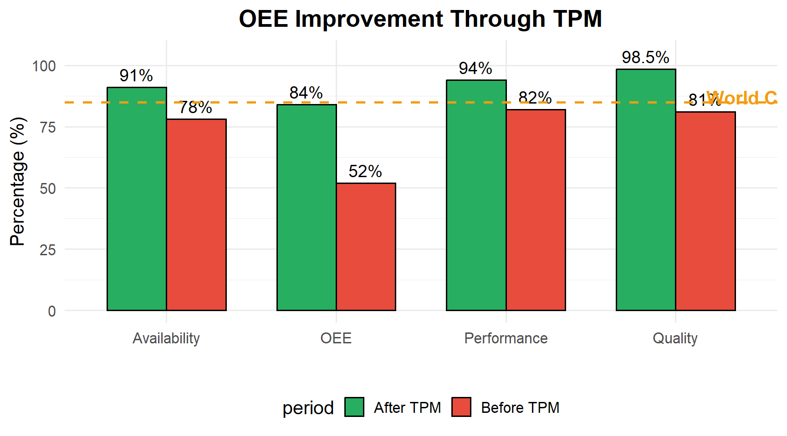
14.11 Summary
| Topic | Key Points |
|---|---|
| **TPM Definition** | Total involvement, productive focus, maintenance excellence; zero breakdowns/defects/accidents |
| **Eight Pillars** | AM, PM, Quality, Focused Improvement, Early Equipment, Training, Safety, Office — built on 5S |
| **OEE** | OEE = Availability × Performance × Quality; World class > 85% |
| **Six Big Losses** | Equipment failure, setup, minor stops, speed loss, defects, startup rejects |
| **Autonomous Maintenance** | Operators maintain own equipment; 7 steps from cleaning to full ownership |
| **Planned Maintenance** | Preventive → Predictive → Proactive; use P-F curve for optimal timing |
14.12 Review Questions
14.12.1 Conceptual Questions
Question 1: What does “Total” mean in Total Productive Maintenance?
“Total” has three dimensions:
- Total participation: Everyone participates, from operators to top management
- Total equipment effectiveness: Aim for maximum OEE (zero losses)
- Total system: Covers the entire equipment lifecycle, from design to disposal
Key insight: TPM is not just a maintenance program — it’s a company-wide philosophy where everyone takes responsibility for equipment care.
Question 2: Why is OEE calculated as a product rather than a sum?
OEE uses multiplication because losses are sequential and compound:
- Availability determines how much time is available
- Performance determines how much of that time is productive
- Quality determines how much of that production is good
Example: - If each factor is 90%: OEE = 0.9 × 0.9 × 0.9 = 72.9% (not 270% or 90%) - This reflects reality: you can only achieve quality on parts that were produced (performance) during time the machine ran (availability)
Why this matters: - Small improvements in all three factors compound - 5% improvement in each: 0.85 × 0.85 × 0.85 = 61% → 0.90 × 0.90 × 0.90 = 73% - Focus on the weakest factor first for biggest impact
Question 3: What is the difference between autonomous maintenance and planned maintenance?
| Aspect | Autonomous Maintenance | Planned Maintenance |
|---|---|---|
| Who | Operators | Maintenance technicians |
| What | Basic care (clean, inspect, lubricate) | Complex repairs, overhauls |
| When | Daily, during operation | Scheduled intervals |
| Skills | Basic equipment knowledge | Technical expertise |
| Goal | Prevent deterioration | Restore/improve equipment |
They complement each other: - AM catches problems early (first line of defense) - PM provides specialized skills when needed - Together they achieve zero breakdowns
14.12.2 Calculation Questions
Question 4: Calculate OEE given the following data.
Given: - Shift length: 480 minutes - Breaks: 30 minutes - Changeover: 45 minutes - Breakdown: 20 minutes - Ideal cycle time: 30 seconds (0.5 min) - Total parts produced: 580 - Rejected parts: 23
Solution:
Planned Production Time = 480 - 30 = 450 minutes
Run Time = 450 - 45 - 20 = 385 minutes
Availability = 385 / 450 = 85.6%
Theoretical Output = 385 / 0.5 = 770 parts
Performance = 580 / 770 = 75.3%
Quality = (580 - 23) / 580 = 557 / 580 = 96.0%
OEE = 85.6% × 75.3% × 96.0% = 61.9%Analysis: Performance is the biggest opportunity for improvement (75.3% vs. targets of 95%). Investigate minor stops and speed losses.
Question 5: A machine has OEE of 65% with Availability 90%, Performance 80%, Quality 90%. Which factor should be prioritized?
Analysis:
Current state: - Availability: 90% (Gap to world class: 5%) - Performance: 80% (Gap to world class: 15%) - Quality: 90% (Gap to world class: 9%)
Performance should be prioritized because:
- Biggest gap: 15 percentage points below world class (95%)
- Biggest OEE impact: Improving performance 10% → OEE = 90% × 90% × 90% = 72.9%
- Often overlooked: Speed losses and minor stops are frequently accepted as normal
Investigation areas for performance: - Minor stops (jams, blockages, sensor trips) - Reduced speed operation - Idling and waiting - Operator pace
Question 6: If current OEE is 60% and target is 85%, what improvement is needed in each component assuming equal improvement?
Solution:
Current: 60% = A × P × Q
If we improve each equally, we need: - Target: 85% = A’ × P’ × Q’ - If A’ = P’ = Q’ = x, then x³ = 0.85 - x = ∛0.85 = 0.947 = 94.7%
Each component needs to reach approximately 95%
Check: 0.947 × 0.947 × 0.947 = 0.849 ≈ 85%
If current factors are A=80%, P=85%, Q=88%: - Availability needs: +15 points (80% → 95%) - Performance needs: +10 points (85% → 95%) - Quality needs: +7 points (88% → 95%)
Prioritize by gap size: Availability first, then Performance, then Quality.
14.12.3 Application Questions
Question 7: An operator notices a small oil leak on a machine. Under traditional maintenance vs. TPM, what happens?
Traditional Maintenance Approach: 1. Operator continues running machine 2. May or may not report to maintenance 3. If reported, added to backlog 4. Maintenance addresses when convenient (days/weeks) 5. Leak worsens, potential bearing damage 6. Eventually leads to breakdown
TPM Approach: 1. Operator notices during routine inspection 2. Tags the abnormality immediately 3. Determines if operator can fix (blue tag) or needs maintenance (red tag) 4. If simple: operator tightens fitting or adds sealant 5. If complex: maintenance prioritizes based on severity 6. Root cause investigated to prevent recurrence 7. Finding shared in team meeting
Key Differences: - Ownership: Operator takes responsibility vs. “not my job” - Speed: Immediate action vs. delayed response - Prevention: Fixed before failure vs. reactive repair - Cost: $10 seal vs. $5,000 bearing replacement + downtime
Question 8: List five items an operator should check during daily autonomous maintenance.
Five Essential Daily AM Checks:
- Cleanliness: Remove chips, debris, dust; clean safety windows and sensors
- Why: Contamination causes wear, sensor malfunctions, quality issues
- Lubrication: Check oil levels, grease points, coolant level
- Why: Inadequate lubrication causes friction, heat, accelerated wear
- Fasteners: Check for loose bolts, guards, covers
- Why: Loose fasteners cause vibration, safety hazards, misalignment
- Leaks: Look for oil, coolant, air, hydraulic leaks
- Why: Leaks indicate seal failure, waste resources, create hazards
- Abnormal sounds/vibration: Listen and feel during startup
- Why: Changes indicate developing problems (bearings, alignment)
Bonus items: - Safety guards in place - Emergency stops functional - Pressure/temperature gauges in normal range - No unusual smells (burning, chemical)
Question 9: Explain how SMED relates to OEE improvement.
SMED (Single Minute Exchange of Die) directly improves Availability:
Loss #2: Setup and Adjustment is an availability loss captured in OEE.
How SMED helps:
- Reduces changeover time:
- Before SMED: 45-minute changeover
- After SMED: 10-minute changeover
- Gain: 35 minutes per changeover
- Impact on OEE:
- If 2 changeovers per shift: 70 minutes saved
- On 450-minute shift: Availability improves 15%+
- Secondary benefits:
- More changeovers become practical
- Smaller batch sizes possible
- Flexibility increased
- Less WIP inventory
SMED Process: 1. Separate internal (machine stopped) from external (while running) setup 2. Convert internal to external where possible 3. Streamline remaining internal operations 4. Practice and standardize
Example: Die change on press - External: Stage next die, prepare tools, preheat - Internal: Remove old die, install new die, adjust - Target: All possible work done while machine runs
14.13 References
- Nakajima, S. (1988). Introduction to TPM: Total Productive Maintenance. Productivity Press.
- Nakajima, S. (1989). TPM Development Program: Implementing Total Productive Maintenance. Productivity Press.
- Shirose, K. (1992). TPM for Operators. Productivity Press.
- Willmott, P., & McCarthy, D. (2001). TPM: A Route to World-Class Performance. Butterworth-Heinemann.
- JIPM (Japan Institute of Plant Maintenance). TPM Awards Criteria.
- Hansen, R.C. (2001). Overall Equipment Effectiveness. Industrial Press.
- Borris, S. (2006). Total Productive Maintenance. McGraw-Hill.